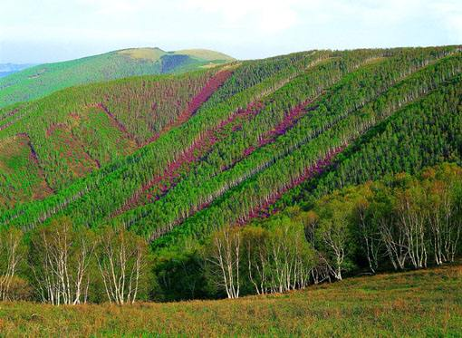
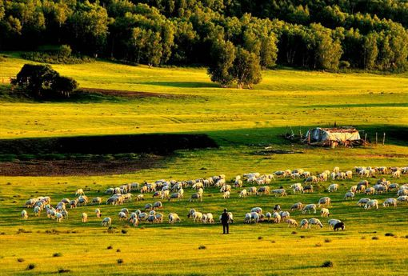

黄岗梁国家森林公园位于内蒙古赤峰市克什克腾旗东北部，地理坐标为东经116''21''至118''26''，北纬42''33''至44''22''，公园总规划面积18万公顷，是以独具特色的森林、草原景观与蒙古族民俗风情为主体，融草原、山地、河谷、湖泊、草旬、丛林、疏林、沙地等景观于…体，集旅游、避暑、度假、科学考察等功能于一身的特大型国家级森林公园。针阔混交疏林草地景观是黄岗梁国家森林公园的特有景观。
1995年开始论证筹建森林公园。 1996年8月由国家林业部正式批准建立黄岗梁国家森林公园，同年由北京林业大学园林学院完成公园总体规划设计，经过3年的资金筹措。 2000年开始投资建设，现已具备一次性接待 80人食宿的能力。二期建设将在2004年前完成，届时公园的接待能力及服务水准将大大提高。[1] 地理环境 地理 黄岗梁国家森林公园距赤峰市300公里，距锡林浩特市180公里，距北京420公里，交通便利，每年6月至10月是旅游的黄金季节。[1] 地形地貌 森林公园设计区域在黄岗梁国有林场的经营范围之内，森林覆盖率 55%，植被盖度94%。黄岗梁地区属大兴安岭山系，黄岗梁主峰大鹅头海拔2029米，是大兴安岭的最高点。境内山势高峻，自然景观丰富多样。 在几十平方公里的范围内集山地，丘陵、沙地、河谷、湖泊、草原、丛林、疏林草地多种地形、地貌及植物景观于—体。[1] 气候 黄岗梁地区是我国温带向寒温带的过渡带，属大陆性气候，气候寒温湿润，四季变化明显。[1] 资源状况 植物 原生植物种类在900种以上。 动物 野生动物不下300种。獐、狍、豹、狐狸、野猪等野兽30余种，斗鸡、山鸡等山禽十几种，黄岗梁国际狩猎场占地32万亩。[1] 冰川 公园内有多处冰川遗迹，有冰川运动形成的阿图冰石林， 黄岗梁地区保存了第四纪冰川最完整的形态，且类型多样，是典型的山谷冰川，黄岗梁两侧有冰斗、U 型谷、角峰、终碛堤、侧碛堤、条痕石漂砾等冰川遗迹，被称为冰谷林海的第四纪冰川遗迹。[1]  景观类型 （1）天然森林景观 多为落叶松或云杉林，树木生长旺盛，森林气氛浓郁，是塞北地区罕见的天然森林群落。 （2）白桦、山杨丛林景现 沿自然起伏地势分布的白桦林和山杨林.其景观特色在于白桦、山杨多为数株丛生状，构成了丰富的植物群落景观。 （3）针阔混交疏林草地景观 以开阔草地为主，但散布其中的白桦林山杨林、云杉林、阔叶松与开阔的草原相互呼应，构成了层次丰富，空间开合 变化，远景、近景、中景搭配的自然景理。 （4）山地草甸景观 其特点为草木植被丰富.每年春季、夏季，各种花草争芳斗艳.构成了五彩斑斓的草甸景观。 （5）地形、地貌景观 有绵延起伏的山地、丘陵谷地和广阔的沙地、沙山.构成了丰富的地质、地貌景观。 （6）野生动物景观 草原与森林为野生动物的栖居提供了良好的场所，这里有鹿、野猪、孤理、艾虎、鹰等。 开发状况 来自日本及国内的专家、学者多次到黄岗梁观光考察，二00一年联合国利，教文组织人与生物圈年会中国分会在黄岗梁国家森林公园举办，同时公园被中国人与生物圈国家委员会批准纳入中国生物圈保护区网络。[1] 娱乐活动 公园目前开展了观光、采集、骑射、垂钓、滑冰、滑雪、划船、观鸟、射猎等多种活动项目。文化娱乐活动有篝火晚会，蒙古民族歌舞欣赏等。 这里独具蒙古族特色手把肉和烤全羊誉满大江南北，同时游客可品尝到产自当地、可即采即食的十余种纯天然、无任何污染的绿色山野菜。[1] 参